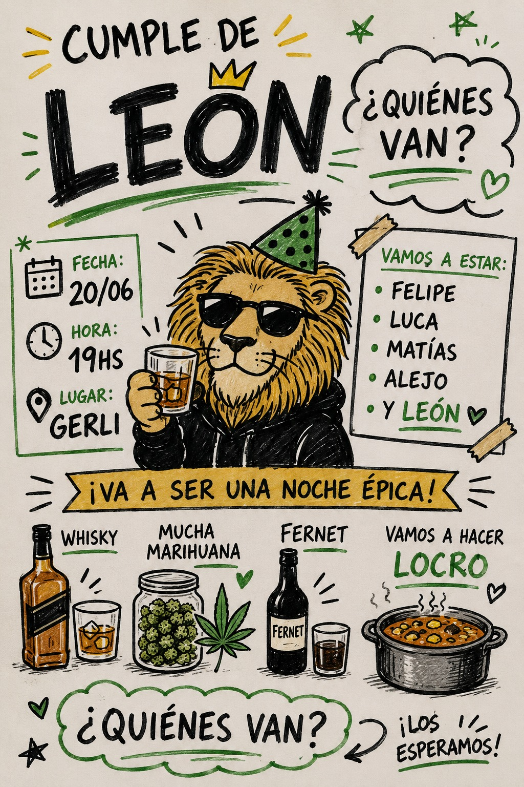
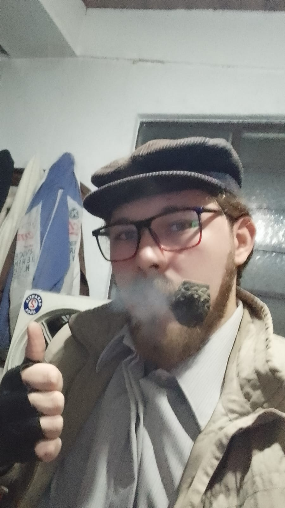

faltan pa' la joda...
alias León 🦁


¿cuánto falta?
¡los esperamos! ↯
Poné tu nombre y sumate a la lista
En el celu comparte la imagen directo a WhatsApp. En la compu abre WhatsApp con texto + link (bajá el PNG para adjuntar).
Tocá la que banques 👇